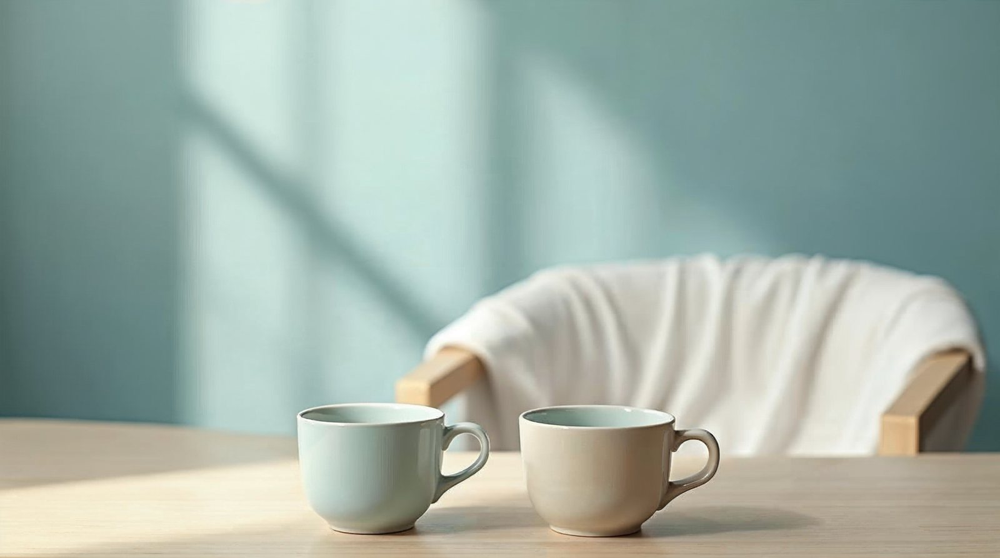
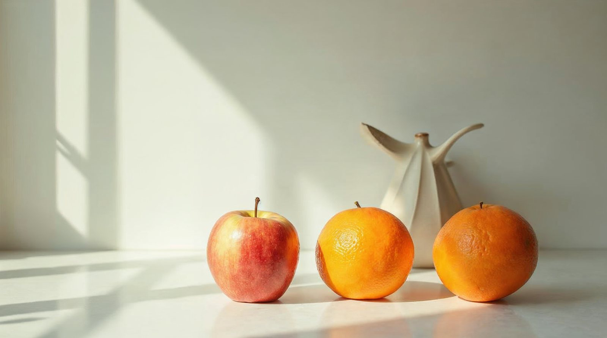
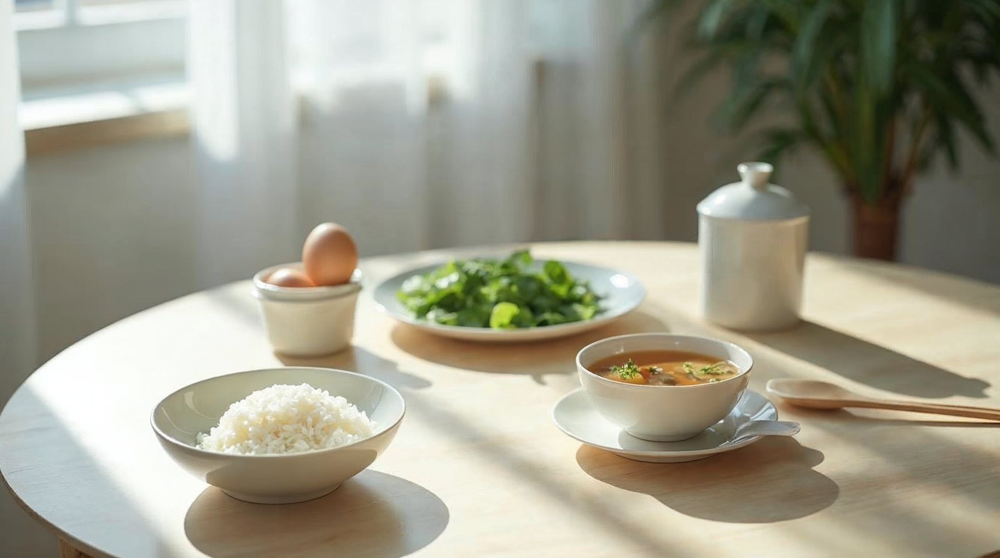
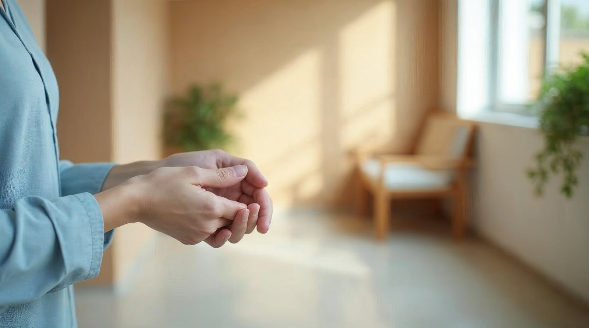

이종호 한의사 감수좋은꿈참사랑한의원 대표원장 (한의사 면허번호 19769)발행 2026-11-25 · 수정 2026-11-26
이 글의 차례
- 측정이 달라진 것과 몸이 달라진 것은 다른 얘기예요
- 왜 측정 조건부터 맞춰 봐야 할까요
- 가상 예시 1: 같은 주에 조건만 다르게 잰 경우
- 가상 예시 2: 같은 조건으로 몇 주 간격을 두고 잰 경우
- 가상 예시 3: 체중은 줄었는데 골격근량도 함께 줄어든 경우
- 왜 체중보다 골격근량과 체지방량을 함께 볼까요?
- 두 장을 비교할 때 자주 하는 오해는?
- 먼저 이렇게 여쭙니다
- 두 결과지를 나란히 놓고 보는 순서
- 일상에서 먼저 해 볼 수 있는 것
- 잴 때마다 숫자가 흔들려 불안하다면?
- 한의원에서 함께 살필 수 있는 경우
- 이렇게 기록해 오시면 상담이 쉬워집니다
- 이런 증상은 먼저 확인이 필요합니다
인바디 결과지 두 장을 나란히 놓으면 가장 먼저 체중 칸으로 눈이 가지만, 비교의 출발점은 숫자가 아니라 두 번의 측정 조건입니다. 아침 공복에 잰 결과와 저녁 식사 뒤에 잰 결과는 같은 사람, 같은 주에 재도 체중과 체수분이 꽤 다르게 나올 수 있기 때문입니다.
그래서 진료실에서는 측정 시간대, 식사와 물 섭취, 운동이나 목욕 여부, 화장실을 다녀왔는지부터 확인하고, 그다음 체중·골격근량·체지방량·체지방률·체수분을 같은 순서로 나란히 적어 봅니다.
이 글에 나오는 숫자는 모두 설명을 위해 지어낸 가상 예시이며, 실제 결과는 사람마다 다르고 해석은 진료에서 함께 합니다.
진료실에서 결과지 두 장을 들고 오셔서 이런 말씀 하시는 분이 계세요. "원장님, 일주일 만에 근육이 빠졌어요. 운동을 더 해야 할까요?" 그 마음 저도 알아요. 숫자가 내려가면 덜컥하죠. 그런데 저는 먼저 "언제 재셨어요?"부터 여쭤요.
측정이 달라진 것과 몸이 달라진 것은 다른 얘기예요
저는 결과지 두 장을 볼 때 이 둘을 먼저 나눠요. 측정 조건이 달라서 숫자가 달라진 건 몸이 변한 게 아니에요. 아침에 잰 것과 저녁에 잰 것, 밥 먹기 전과 후, 운동 전과 후는 같은 몸이라도 숫자가 다르게 나올 수 있거든요.
반면 같은 시간, 같은 조건으로 몇 주 간격을 두고 잰 두 장은 몸의 흐름을 보여 줄 가능성이 커요. 그래서 비교는 늘 "조건이 같았나?"에서 시작해요. 이게 맞춰지지 않으면 숫자를 아무리 들여다봐도 헷갈리기만 하거든요.
왜 측정 조건부터 맞춰 봐야 할까요
- 인바디 770 같은 체성분 분석기는 몸에 아주 약한 전류를 흘려 보내 몸속 수분이 전기를 얼마나 잘 통하게 하는지를 바탕으로 근육과 지방의 양을 계산합니다. 그래서 몸속 수분의 양과 분포가 달라지면 같은 몸이라도 계산된 숫자가 조금씩 달라질 수 있습니다.
- 식사를 하거나 물을 많이 마신 직후에는 그 무게가 체중에 그대로 더해지고, 위와 장에 있는 음식과 수분도 측정값에 영향을 줄 수 있습니다.
- 운동이나 사우나 직후에는 땀으로 수분이 빠지고 근육 쪽으로 혈액이 몰려 있어, 평소와 다른 값이 나오기 쉽습니다.
- 생리 전후처럼 몸이 붓는 시기에는 체수분과 체중이 함께 늘어 보일 수 있습니다.
- 하루 중에도 오래 서 있거나 앉아 있으면 수분이 다리 쪽으로 내려가 아침과 저녁의 분포가 달라집니다.
- 그래서 두 결과지의 차이가 몸의 변화 때문인지, 측정 조건이 달라서 생긴 것인지를 먼저 나눠 보는 것이 비교의 첫 단계입니다.
저는 인바디 결과지를 사진 한 장에 비유해요. 사진은 찍는 순간의 모습만 담잖아요. 막 밥을 먹고 찍은 사진과 아침에 일어나서 찍은 사진은 같은 사람이라도 달라 보이죠. 한 장만 보고 "살이 쪘다", "빠졌다"를 말하기는 어려운 거예요.
그런데 같은 시간, 같은 자리에서 몇 주마다 찍은 사진을 나란히 놓으면 흐름이 보여요. 결과지도 똑같아요. 한 장의 숫자보다 같은 조건으로 쌓인 여러 장의 흐름이 몸을 더 잘 보여 주거든요.

가상 예시 1: 같은 주에 조건만 다르게 잰 경우
아래는 설명을 위해 지어낸 숫자입니다. 같은 사람이 같은 주에 한 번은 아침 공복에, 한 번은 저녁 식사와 운동 뒤에 쟀다고 가정해 보겠습니다.
- 체중: 아침 공복 68.2kg / 저녁 식사·운동 뒤 69.3kg (1.1kg 차이)
- 체수분: 아침 38.0L / 저녁 38.6L
- 골격근량: 아침 28.4kg / 저녁 28.7kg
- 체지방량: 아침 19.6kg / 저녁 19.9kg
- 체지방률: 아침 28.7% / 저녁 28.7%
이 예시처럼 체중이 1kg 넘게 달라도 체지방률은 거의 같고, 체수분과 골격근량이 함께 조금 올라가 있다면 대부분은 식사와 물, 측정 시간대의 차이로 먼저 생각해 봅니다. 몸이 일주일 사이에 크게 바뀌었다고 보기보다는 '조건이 달랐다'고 기록해 두는 편이 정확합니다.
가상 예시 2: 같은 조건으로 몇 주 간격을 두고 잰 경우
이번에도 지어낸 숫자입니다. 두 번 모두 아침에 일어나 화장실을 다녀온 뒤 식사 전에 쟀고, 그 사이 간격은 6주라고 가정합니다. 어떤 치료의 결과를 보여 드리려는 숫자가 아니라, 같은 조건에서 잰 두 장을 읽는 방법을 보여 드리려는 예시입니다.
- 체중: 첫 측정 72.5kg / 6주 뒤 71.6kg
- 골격근량: 첫 측정 29.1kg / 6주 뒤 29.0kg
- 체지방량: 첫 측정 22.8kg / 6주 뒤 22.0kg
- 체지방률: 첫 측정 31.4% / 6주 뒤 30.7%
조건이 같았다면 이 차이는 조건 탓보다는 그사이 생활의 흐름을 반영했을 가능성이 커집니다. 다만 몇백 그램 안팎의 작은 차이는 그날 몸속 수분 사정으로도 생길 수 있어, 한 번의 숫자에 크게 의미를 두지 않습니다.
그리고 숫자가 어느 쪽으로 움직였든, 그 이유는 결과지만으로 정하지 않고 그사이 식사, 잠, 활동량, 복용한 약을 함께 들으며 살펴봅니다.
가상 예시 3: 체중은 줄었는데 골격근량도 함께 줄어든 경우
이번에도 설명을 위해 지어낸 숫자예요. 같은 조건으로 8주 간격을 두고 쟀고, 그사이 식사량을 크게 줄였다고 가정해 볼게요.
- 체중: 첫 측정 65.0kg / 8주 뒤 62.8kg
- 골격근량: 첫 측정 24.6kg / 8주 뒤 23.9kg
- 체지방량: 첫 측정 20.1kg / 8주 뒤 19.0kg
- 체지방률: 첫 측정 30.9% / 8주 뒤 30.3%
이런 결과지를 보면 체중이 2kg 넘게 줄었다는 숫자에 먼저 눈이 가요. 그런데 나란히 놓고 보면 줄어든 무게의 상당 부분이 골격근량 쪽에서도 빠졌고, 체지방률은 생각만큼 내려가지 않았다는 게 보여요.
이럴 때 저는 숫자보다 그사이 식사를 먼저 여쭤요. 끼니를 많이 거르셨는지, 단백질이 있는 음식을 드셨는지, 잠과 걷는 양은 어땠는지요. 무게만 보면 놓치는 게 이렇게 나란히 놓으면 보이는 거예요.
왜 체중보다 골격근량과 체지방량을 함께 볼까요?
체중은 근육, 지방, 뼈, 물을 다 합친 무게예요. 그러니 체중 하나만으로는 무엇이 늘고 무엇이 줄었는지 알 수 없어요. 같은 1kg이 빠져도 지방이 빠진 것과 근육이나 물이 빠진 것은 몸으로선 전혀 다른 얘기거든요.
그래서 저는 체중을 볼 때 골격근량과 체지방량을 꼭 옆에 같이 적으시라고 말씀드려요. 체중이 그대로여도 근육이 조금 늘고 지방이 조금 줄었다면 몸은 좋은 쪽으로 움직였을 수 있고, 반대도 마찬가지예요.
나이가 들면서 근육이 조금씩 줄어드는 건 자연스러운 변화예요. 겁낼 일은 아니에요. 다만 그 속도를 천천히 하려면 결과지에서 근육 칸을 같이 보는 습관이 도움이 돼요.
두 장을 비교할 때 자주 하는 오해는?
- 체중이 줄었으니 다 좋은 쪽이라고 여기기 쉽지만, 무엇이 줄었는지를 같이 봐야 해요.
- 체지방률이 1% 안팎 달라졌다고 크게 변했다고 보기 쉽지만, 그 정도는 그날 몸속 물 사정으로도 생길 수 있어요.
- 기초대사량 칸을 따로 애써서 올리는 숫자로 여기기 쉽지만, 대개 근육량 같은 체성분을 바탕으로 계산된 값이라 근육 칸과 함께 움직이는 경우가 많아요.
- 결과지 점수가 높으면 건강하다고 단정하기 쉽지만, 점수는 체성분 비율을 바탕으로 한 참고 숫자라 잠과 소화 같은 몸 상태는 따로 살펴야 해요.
- 골격근량이 조금 줄면 운동이 모자라서라고만 여기기 쉽지만, 그사이 몸살을 앓았거나 식사를 크게 줄인 영향일 때도 있어요.
이런 오해는 누구나 해요. 결과지가 숫자로 딱 나오니 그 숫자가 정답처럼 느껴지거든요. 그래서 저는 숫자를 읽는 순서를 같이 정해 드리는 걸 중요하게 생각해요.
먼저 이렇게 여쭙니다
- 두 번 측정한 시간대가 같았는지, 아침인지 저녁인지 여쭙니다.
- 측정 전에 식사나 물, 커피를 드셨는지, 운동이나 목욕을 하셨는지 여쭙니다.
- 측정 직전에 화장실을 다녀오셨는지 여쭙니다.
- 여성이라면 생리 주기 중 어느 시기였는지 여쭙니다.
- 그사이 식사량, 잠, 걷는 양, 일하는 시간에 달라진 것이 있었는지 여쭙니다.
- 새로 드시기 시작했거나 끊은 약, 영양제가 있는지 여쭙니다.
- 두 번 측정 사이에 몸살이나 설사처럼 몸이 크게 지친 일이 있었는지 여쭙니다.
질문이 많아 보여도 미리 다 정리하지 않으셔도 돼요. 오시면 제가 하나씩 여쭤 볼게요. 결과지 두 장과 기억나는 것만 가져오시면 나머지는 대화하면서 같이 채워 가면 되거든요.

두 결과지를 나란히 놓고 보는 순서
- 맨 위의 측정 날짜와 시간을 먼저 적습니다. 결과지에 시간이 나와 있다면 두 장이 같은 시간대인지 바로 확인할 수 있습니다.
- 체중을 적고, 바로 옆에 체수분을 함께 적습니다. 체중과 체수분이 같이 움직였다면 수분 영향부터 생각해 봅니다.
- 골격근량과 체지방량을 나란히 적습니다. 체중 변화가 둘 중 어느 쪽에서 주로 왔는지 보기 위해서입니다.
- 체지방률을 적습니다. 체중이 비슷해도 체지방률이 달라질 수 있고, 체중이 달라도 체지방률은 비슷할 수 있습니다.
- 마지막으로 부위별 근육과 체수분 균형을 봅니다. 한쪽 팔다리만 유난히 다르게 나왔다면 그날 붓기나 다친 곳이 있었는지 여쭙습니다.

일상에서 먼저 해 볼 수 있는 것
- 다시 잴 계획이라면 첫 측정과 같은 시간대, 같은 조건으로 재는 것이 비교에 가장 도움이 됩니다. 꼭 아침 공복일 필요는 없고, 식사 전이든 식사 뒤 두 시간쯤 지난 때든 하나를 정해 계속 지키면 됩니다.
- 측정 전 두 시간쯤은 든든한 식사를 피하고, 운동과 사우나는 측정 뒤로 미룹니다.
- 금속 장신구와 두꺼운 옷은 벗고, 맨발과 맨손이 전극에 잘 닿게 합니다.
- 결과지는 버리지 말고 한곳에 모아 두세요. 휴대폰으로 찍어 날짜별로 정리해 두면 다음 상담에서 바로 비교할 수 있습니다.
- 숫자 하나가 달라졌다고 바로 식사를 크게 바꾸기보다, 같은 조건의 기록이 두세 번 쌓였을 때 흐름을 보는 편이 덜 흔들립니다.
이렇게 여러 가지를 적었지만 다 하시라는 건 아니에요. 딱 하나만 부탁드린다면, 다음에 잴 때도 지난번과 같은 시간대에 재시는 거예요. 그것 하나만 지켜도 두 장을 나란히 볼 때 훨씬 덜 헷갈리거든요. 딴 거는 편하게 하셔도 돼요.
잴 때마다 숫자가 흔들려 불안하다면?
결과지를 받을 때마다 마음이 오르락내리락한다는 분이 계세요. 그건 성격이 예민해서가 아니라, 숫자가 원래 그렇게 조금씩 흔들리는 거예요. 몸속 물의 양은 하루에도 여러 번 바뀌거든요.
그래서 저는 너무 자주 재지 마시라고 말씀드려요. 몇 주 간격을 두고 같은 조건으로 재면, 작은 흔들림은 지나가고 큰 흐름만 남아요. 그 흐름을 보는 게 결과지를 제대로 쓰는 방법이에요.
숫자는 몸을 이해하는 단서 중 하나예요. 결과지만큼 중요한 건 요즘 잠은 어떤지, 소화는 편한지, 몸이 가벼운지 같은 하루의 느낌이에요. 저는 결과지와 그 이야기를 같이 들어요.

한의원에서 함께 살필 수 있는 경우
- 체중은 비슷한데 근육량과 체지방률이 걱정될 때, 결과지 숫자와 함께 식사·잠·활동량을 들으며 생활에서 먼저 조정할 부분을 함께 정리합니다.
- 결과지마다 체수분과 부종 관련 숫자가 크게 오르내릴 때, 붓는 시간대와 짜게 먹는 습관, 잠과 소변 횟수를 함께 여쭙니다.
- 다른 곳에서 잰 결과지와 비교하고 싶을 때, 기기와 측정 조건이 다르면 직접 비교가 어려울 수 있어 그 점을 먼저 설명해 드립니다.
진료 흐름은 이렇습니다. 모든 분께 맥부터 짚으며 지내신 이야기를 여쭙고, 체성분이 상담에 도움이 된다고 판단될 때 인바디 770 측정을 권합니다. 재게 되면 그날의 측정 조건을 함께 적어 두고, 결과지는 진료실에서 지난 기록과 나란히 보며 칸마다 설명해 드립니다.
결과지를 보기 전에 맥을 먼저 짚는 이유가 있어요. 숫자는 몸의 일부만 보여 주거든요. 같은 체지방률이라도 잠이 얕고 소화가 더딘 분과 그렇지 않은 분은 먼저 살필 것이 달라요. 그래서 저는 결과지와 맥, 그리고 하루 이야기를 같이 놓고 봐요.
숫자가 기대만큼 움직이지 않았다고 실망하실 필요는 없어요. 원래 몸은 천천히 움직여요. 무리해서 세게 바꾸기보다 약하게, 오래 이어 가는 쪽이 결국 흐름을 바꾸는 경우가 많거든요. 그 과정은 제가 같이 볼게요.
검사 비용과 대상은 방문 전 02-815-7510으로 확인해 주세요.
이렇게 기록해 오시면 상담이 쉬워집니다
- 이전 결과지(사진도 괜찮습니다)와 측정한 날짜, 대략의 시간대
- 측정 전에 먹고 마신 것, 운동·목욕 여부
- 그사이 달라진 식사량, 잠자는 시간, 하루 걸음 수
- 새로 시작했거나 끊은 약과 영양제 이름
- 붓는 느낌이 있다면 언제, 어디가 붓는지
기록은 휴대전화 메모에 한 줄이면 돼요. "12/1 아침 8시, 화장실 다녀옴, 공복, 운동 전" 정도로요. 결과지 사진 바로 옆에 이 한 줄을 남겨 두시면, 다음에 비교할 때 조건이 같았는지 바로 알 수 있어요.
결과지를 여러 장 모으셨다면 날짜 순서대로 정리해 오시면 좋아요. 체중, 골격근량, 체지방량, 체지방률 네 칸만 종이 한 장에 옮겨 적어 오셔도 흐름이 한눈에 보여요.
이런 증상은 먼저 확인이 필요합니다
- 일부러 줄이지 않았는데 몇 달 사이 체중이 눈에 띄게 빠지는 경우
- 가슴이 아프거나 숨이 많이 찬 경우, 한쪽 다리만 갑자기 붓고 아픈 경우
이런 신호가 있으면 한의원보다 가까운 병원이나 응급실을 먼저 찾으세요.

여쭙는 것
- 두 번 측정한 시간대가 같았는지, 아침인지 저녁인지 여쭙니다.
- 측정 전에 식사나 물, 커피를 드셨는지, 운동이나 목욕을 하셨는지 여쭙니다.
- 측정 직전에 화장실을 다녀오셨는지 여쭙니다.
생활에서 해 볼 것
- 다시 잴 계획이라면 첫 측정과 같은 시간대, 같은 조건으로 재는 것이 비교에 가장…
- 측정 전 두 시간쯤은 든든한 식사를 피하고, 운동과 사우나는 측정 뒤로 미룹니다.
- 금속 장신구와 두꺼운 옷은 벗고, 맨발과 맨손이 전극에 잘 닿게 합니다.
한의원에서 함께 살필 것
- 체중은 비슷한데 근육량과 체지방률이 걱정될 때, 결과지 숫자와 함께 식사·잠·활동량…
- 결과지마다 체수분과 부종 관련 숫자가 크게 오르내릴 때, 붓는 시간대와 짜게 먹는…
- 다른 곳에서 잰 결과지와 비교하고 싶을 때, 기기와 측정 조건이 다르면 직접 비교가…
먼저 확인이 필요한 신호
- 일부러 줄이지 않았는데 몇 달 사이 체중이 눈에 띄게 빠지는 경우
- 가슴이 아프거나 숨이 많이 찬 경우, 한쪽 다리만 갑자기 붓고 아픈 경우
한눈에 보는 표
| 구분 | 핵심 |
|---|---|
| 여쭙는 것 | 두 번 측정한 시간대가 같았는지, 아침인지 저녁인지 여쭙니다. 측정 전에 식사나 물, 커피를 드셨는지, 운동이나 목욕을 하셨는지 여쭙니다. |
| 생활에서 해 볼 것 | 다시 잴 계획이라면 첫 측정과 같은 시간대, 같은 조건으로 재는 것이 비교에 가장 도움이 됩니다. 꼭 아침 공복일 필요는 없고, 식사 전이든 식사 뒤 두 시간쯤 지난 때든 하나를 정해 계속 지키면 됩니다. 측정 전 두 시간쯤은 든든한 식사를 피하고, 운동과 사우나는 측정 뒤로 미룹니다. |
| 한의원에서 함께 살필 것 | 체중은 비슷한데 근육량과 체지방률이 걱정될 때, 결과지 숫자와 함께 식사·잠·활동량을 들으며 생활에서 먼저 조정할 부분을 함께 정리합니다. 결과지마다 체수분과 부종 관련 숫자가 크게 오르내릴 때, 붓는 시간대와 짜게 먹는 습관, 잠과 소변 횟수를 함께 여쭙니다. |
| 먼저 확인이 필요한 신호 | 일부러 줄이지 않았는데 몇 달 사이 체중이 눈에 띄게 빠지는 경우 가슴이 아프거나 숨이 많이 찬 경우, 한쪽 다리만 갑자기 붓고 아픈 경우 |
자주 묻는 질문
다른 곳에서 잰 인바디 결과와 비교해도 되나요?
참고는 할 수 있지만 기기 모델과 측정 조건이 다르면 숫자를 그대로 비교하기 어렵습니다. 같은 기기, 같은 조건으로 잰 기록끼리 비교하는 것이 가장 정확합니다.
일주일 만에 다시 재면 변화를 볼 수 있나요?
일주일 사이의 차이는 식사·수분·시간대 영향이 더 클 수 있습니다. 같은 조건으로 몇 주 간격을 두고 재야 흐름을 보기 좋습니다.
체중은 그대로인데 체지방률이 달라질 수 있나요?
네. 체중이 같아도 근육과 지방의 비율이 달라지면 체지방률은 달라질 수 있습니다. 반대로 체중이 달라도 체지방률은 비슷하게 나올 수 있습니다.
결과지를 잃어버렸는데 다시 볼 수 있나요?
이전 측정 기록을 다시 볼 수 있는지와 그 방법은 방문 전 02-815-7510으로 확인해 주세요. 앞으로는 결과지를 받을 때마다 휴대폰으로 찍어 두시면 편합니다.
좋은꿈참사랑한의원은 재진 때 지난번 이야기부터 이어서 여쭙니다. 진료시간과 예약은 오시는 길에서 확인하세요.
어디서 상담받을 수 있나요?
좋은꿈참사랑한의원은 서울 동작구 만양로2길 2 신성빌딩 3층·5층(서울 동작구 상도동, 7호선 상도역 3번 출구 근처)에 있습니다. 한의사 3명(이종호 대표원장, 조영기 수석진료원장, 정원영 진료원장)이 진료합니다. 진료시간은 평일 09:30~20:00(점심 13:00~14:00), 토·일·공휴일 09:30~15:00이며, 방문 전 전화로 확인을 권합니다. 예약은 네이버 예약, 카카오톡 상담, 전화 02-815-7510로 받습니다.
이 글은 일반적인 건강 정보이며 개인의 진단이나 치료를 대신하지 않습니다. 증상이 있거나 복용 중인 약이 있다면 진료를 통해 확인하세요. 치료 효과는 개인마다 다를 수 있습니다.
작성 기준: 일반적으로 알려져 있는 건강 정보를 참고해 정리했습니다(대표원장 감수). 증상 기록은 1~2주 동안 하루 1회, 비슷한 시간에 적어 오시면 지난 상태와 비교하기 쉽습니다.